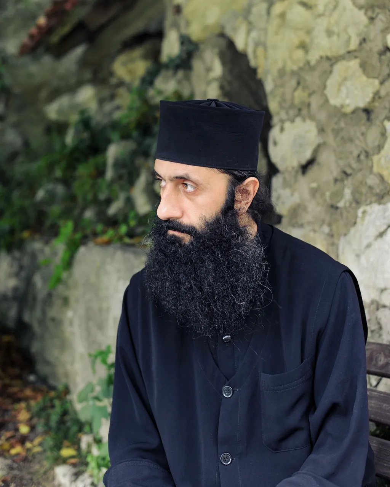

Georgia's daring, death-defying pilgrimage
In Georgia's remote Imereti region, monks scale the 40m-high Katskhi Pillar in a daring, nerve-jangling ascent. The reason: to get closer to God.
As I drove through the remote Imereti region of central-western Georgia, rolling hills and lush pine forests flanked the empty roads and grazing cows dotted the verdant landscape. It was a picture-perfect rural scene. Suddenly, the car rounded a bend and an incongruous sight appeared high above the canopy: up ahead, a massive limestone monolith jutted into the sky, about 40m tall, with a small church perched on the top. I'd finally reached the Katskhi Pillar. I had travelled 220km from Georgia's capital Tbilisi to visit this soaring stone structure. I'd long been fascinated by the famous Greek monasteries of Meteora – which are also precipitously built on natural rock pillars – and when I'd heard of an extraordinary church where daring monks climb to be closer to heaven, I knew I had to visit. Monks lived on top of the Katskhi Pillar for centuries; the last one only came down for good in 2015. Today, it's a pilgrimage site for many Orthodox Christians, as well as a tourist attraction for people who flock here to here to witness the nerve-jangling sight of monks dangling off the steep rock edge.
Dedicated to a monk named Maximus the Confessor, the church is one of the world's highest and most isolated
churches. It is thought to have been built somewhere between the 6th and 8th Centuries by Stylites, or
"pillar
monks", who believed that praying on top of pillars or high cliffs would distance them from worldly
temptations.
Father Ilarion lives in Katskhi Monastery below the monolith but climbs up to the church several times a
week
(Credit: Nika Ergemlidze)
Father Ilarion lives in Katskhi Monastery below the monolith but climbs up to the church several times a
week
(Credit: Nika Ergemlidze)

According to local legend, the Katskhi Pillar has always been a holy place and was once used by ancient religions for fertility rites. After Christianity was introduced to Georgia in the 4th Century, the pillar became a place of worship for Orthodox Christians. "This pillar is the symbol of the true cross," said Father Ilarion. "Even before there was a church on top, idols of Gods have been found below the pillar."
Historians believe that monks started living on the pillar around the 10th Century, though they are still
unsure
how they reached the top, let alone carried the building materials to construct the church.
The church on the summit is thought to be one of the world's highest and most isolated churches (Credit:
Feng
Wei Photography/Getty Images)
The church on the summit is thought to be one of the world's highest and most isolated churches (Credit:
Feng
Wei Photography/Getty Images)
However, the church lay shrouded in mystery until 1944, when, for the first time in modern history, a group from outside the religious order scaled the pillar. "In 1944, Georgian writers Levan Gotua and Akaki Beliashvili, architect Vakhtang Tsintsadze and alpinist Aleksandre Japaridze climbed the Katsakhi pillar and they found the ruins of the church," Khizanishvili explained. The observations from the expedition, which found three hermit cells and a wine cellar in addition to the church, revealed the pillar method of praying. "Tsintsadze, the architect, explored the ruins for several hours and linked it to a place of worship built by Stylites," Khizanishvili noted. A few decades after this rediscovery, in the early 1990s, a monk named Maxime Qavtaradze revived the Stylites' method of praying. With the help of locals from the surrounding region and the National Agency for Cultural Heritage Preservation of Georgia, he restored the sacred church to its former glory, using ropes and pulleys to transfer materials to the top, and even installed a 40m-long iron ladder to make scaling the pillar easier.
The only way to ascend the pillar is via a 40m-long iron ladder (Credit: Nika Ergemlidze) The only way to ascend the pillar is via a 40m-long iron ladder (Credit: Nika Ergemlidze)Father Maxime then climbed the ladder, renounced earthly life and lived at the sky-high church for more than 20 years, coming down only occasionally for prayer meetings in the monastery below. He spent most of his time in isolation, reading and praying, and had food supplies hauled up to him with the help of pulleys. However, once tourists started to arrive and the site no longer offered the peace and tranquillity it once did, he descended for good in 2015 and is now the current leader of the Katskhi Monastery. "The pillar has become a tourist attraction and it is quite noisy around this site. So as monks we don't get the peace and seclusion we yearn [for] on top because we can still hear all the sounds below," Father Ilarion explained. "So most of us, including Father Maxime, only go on top for a few hours and come back down." Since the Stylite method of praying only allows one monk in the church at a time, monks from the Katskhi monastery take turns to scale the ladder once or twice a week. Although no monks were climbing the day I visited, Father Ilarion told me that the most daring monks, clad in their long black robes, make the 20-minute ascent as free climbers, using only the rungs of the ladder for support (a less-terrifying option is to use a rope and harness). Monks must first seek Father Maxime's blessings; once they reach the top, they pray in the church and tend to the wine cellar where they make wine for the monastery. They then descend before dusk to participate in the monastery's nightly prayer session. My heart was in my throat just thinking about making the death-defying ascent, since just a thin steel scaffolding encircles the ladder for safety. But "focussing on reaching the top helps," Father Ilarion told me. "The first time I climbed, I didn't dare to look down," he added. "But I have now got used to it and can complete this deadly pilgrimage in about 15-20 minutes without a rope or harness."
He explained that visitors are only allowed to ascend to the first level of the limestone pillar, where you can light candles and pray by a 6th-Century cross that has been enshrined into the monolith. Yearning to scale at least a tiny section of the rock, I jumped at the opportunity, climbing the narrow stone stairway constructed just behind the ladder. I soaked up the serenity for a few moments before climbing down to explore the church of Simeon Stylites, located at the foot of the pillar, which is adorned with beautiful artefacts and religious paintings.
Father Ilarion told me that even nuns who are in the same religious order aren't allowed to undertake the dangerous pilgrimage to the summit. Rules in the Georgian Orthodox Church state that monks and nuns must pray in separate monasteries; while nuns are allowed to enter the religious complex, they have to pray at the church of Simeon Stylites below, which was constructed around 1999.
"The reason why women aren't allowed to climb up this pillar to pray at the church on top is because they aren't pillar monks like us. We are different kind of monks who want to reach the highest points to pray," Father Ilarion told me. He explained that this rule isn't about gender discrimination in religion.
As monks we believe that if men are the head, women are the spine. Both can't work without each other "In Georgia, our first Queen Tamar, who reigned from 1184 to 1213, was also declared a saint by the Georgian Orthodox Church. As monks we believe that if men are the head, women are the spine. Both can't work without each other. So, at this pillar the nuns support us below by giving us food and praying with us on important occasions," he said.
While I was still intrigued to see what was at the top of the pillar, Kellerdashvili, another tourist visiting the pillar, had a different point of view. "I don't really want to climb to the top. Just looking at it from below is heaven on Earth for me," she told me, glancing towards the top of the pillar in awe. Monk Amirani, another monk at the Katskhi monastery, believes that such rules are important to preserve the history and culture of Georgia. "When I climbed to the top of the pillar for the first time in 1992, I realised it is a special place and very important for Christianity," he said. "It is important that the rules of this pillar are preserved. It is a spot to pray and for troubled men to find peace of mind and solitude." But for Father Iliarion, whether or not you can climb to the top, anyone can find inner peace and solace here. "The world has many beautiful places but the main thing about this pillar is the serenity it offers," he said. "Before the limestone pillar existed, this entire region was the sea. Somehow, I can still feel the calming presence of the sea in this place today, though it is miles away, making it the perfect spot to get closer to God."